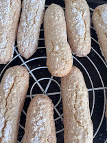
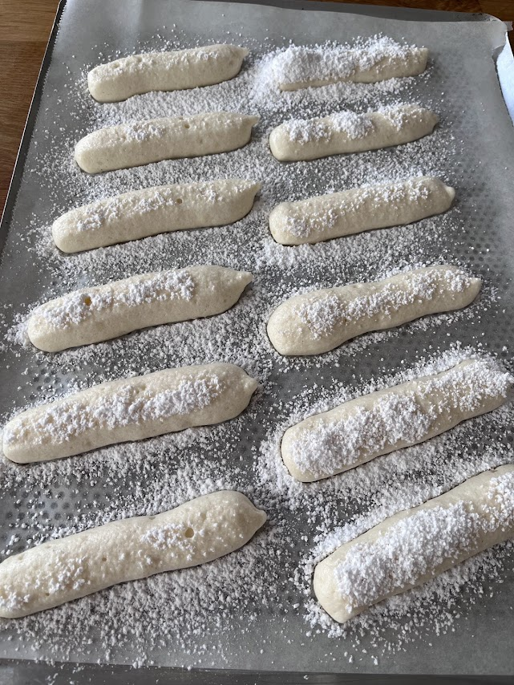
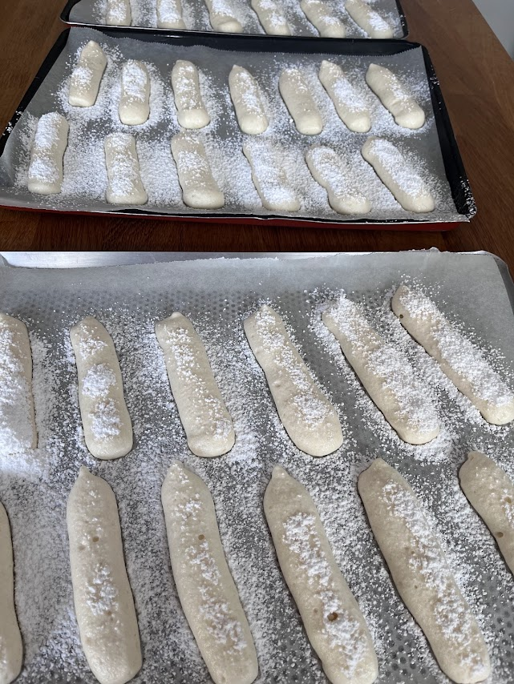

Biscuits Savoiardi (biscuits du tiramisu)
⏱️ 30 min
🔥 Facile
👥 Environ 30 biscuits



Étapes
- Préchauffage
Préchauffez le four à 180°C (chaleur tournante) et tapissez une plaque de papier cuisson. - Monter les blancs
Dans un bol, montez les blancs d’œufs en neige. Lorsqu’ils commencent à mousser, ajoutez 50 g de sucre en plusieurs fois pour les serrer. Ils doivent être fermes, lisses et former un bec d’oiseau. - Blanchir les jaunes
Dans un autre bol, fouettez vigoureusement les jaunes avec les 50 g de sucre restants jusqu’à ce que le mélange blanchisse, devienne crémeux et double de volume. - Mélange délicat
Versez les jaunes blanchis sur les blancs en neige. Incorporez-les très délicatement à la maryse, en soulevant la masse du bas vers le haut pour ne pas faire retomber les blancs. - Ajouter la farine
Tamisez la farine au-dessus de la préparation. Incorporez-la délicatement, toujours à la maryse, jusqu’à obtenir une pâte homogène et aérienne. - Pochage
Transférez la pâte dans une poche à douille munie d’une douille lisse (1 à 1,5 cm). Sur la plaque, formez des bâtonnets de 8 à 10 cm en les espaçant. - Sucre glace (le croustillant)
Saupoudrez généreusement les biscuits de sucre glace. Attendez 2 minutes qu’il soit absorbé, puis saupoudrez une seconde fois. - Cuisson
Enfournez immédiatement pour 12 à 15 minutes. Les biscuits doivent être légèrement dorés mais rester souples au toucher. - Refroidissement
Laissez refroidir complètement sur une grille avant de les utiliser pour le tiramisu. - Le petit plus
Laissez sécher les biscuits à l’air libre quelques heures après cuisson : ils absorberont encore mieux le café du tiramisu sans devenir mous.